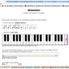

Why would I ever want to use Blossomer?
Ah, the most frequently asked question of all!
Here is a non-exhaustive list:
- You ran out of broken record players
- You miss that feeling of practicing something but never perfecting it
- You want to plagiarize a piece while avoiding copyright claims; this works best if you set the playback generation type to "Markov chain (separate pitch and rhythm sets)"
- You need a new atonal ear training tool
- You just feel like goofing around with some note sequences of your own
Speaking of generated melodies, I came up (or ended up, depending on how you look at it) with a pretty interesting one. How do I show others?
On the page where the melody was generated you can find a text box containing the page's URL. Copy that and paste wherever you so please!
I keep getting a message saying "playback is not supported" followed by a sad face. What's the deal?
Audio generation currently uses Google's Web Audio API for HTML5, which looks like it only works in Chrome and Safari for now.
Playback is suuuuupperrr slooowwwwwwww....
Make sure the tab generating audio is the current active tab in your browser window; that should fix things.
Ach! It's a bug!
Email me about it!
about | index | faq | contact